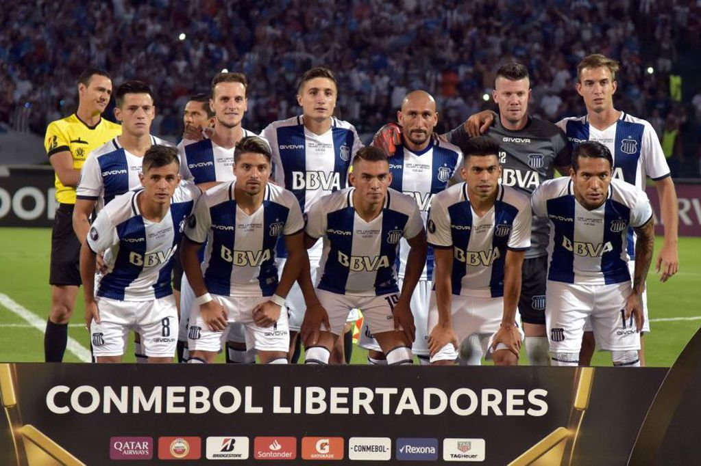
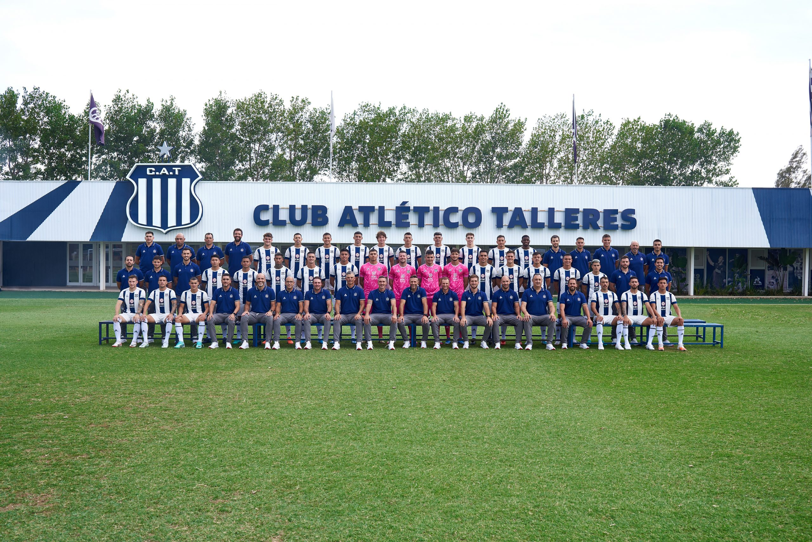
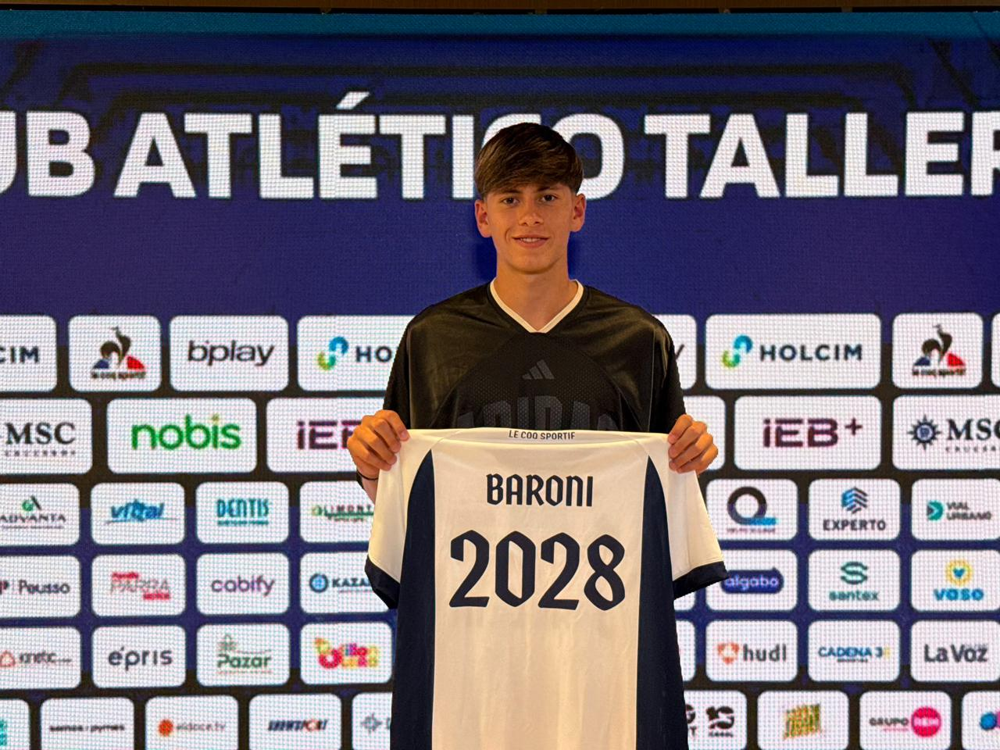

Plantel de Talleres
Talleres de Cordoba cuenta con un plantel de actual de un total de 30 jugadores, algunos surgidos desde la cantera del club y otros siendo fichajes realizados por el mismo.
Sobre el plantel

El club se caracteriza por buscar un equilibrio entre jugadores nacidos del club, de buen pie y con garra para poder pelear en todas las competiciones
Jugadores por posicion:

- Arqueros: Unsain, Barbi
- Defensas: Schott, T. Baroni, Chamorro, Baez, Maidana, Catalan, Riquelme, Fernandez, Fascendini
- Mediocampistas: Fattori, Galarza, Sforza, Trey, Caceres, Gomez, Gallard, Cristaldo, G. Baroni, Ortiz
- Delanteros: Rick, Depietri, Alvarez, Alastra, Valoyes, Chiavassa, Davila
Armado del plantel

A pesar de no estar pasando un buen momento deportivamente, Talleres siempre busca armar un plantel con jerarquia para poder pelear titulos y jugar copas internacionales.